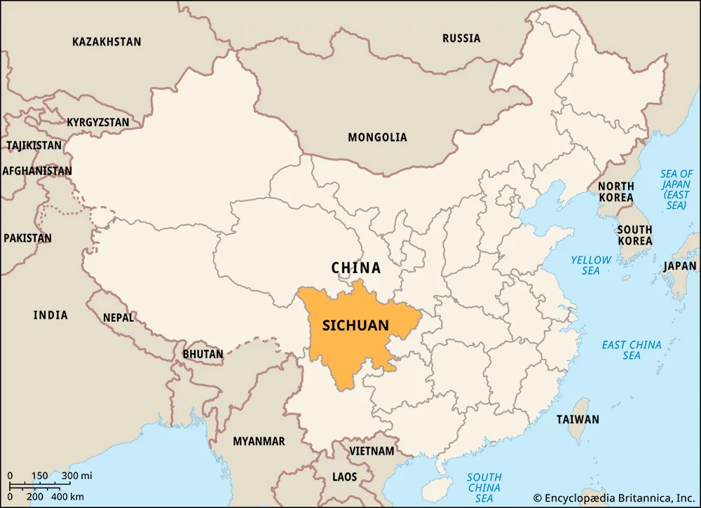
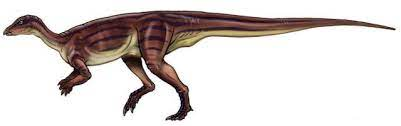

~~~~~
~~~~~
agilisaurus
(also its scientific name!)
by sharon adelusi
by sharon adelusi
The agilisaurus is a small dinosaur that lived millions of years ago (169-159 million, to be exact). The scientific name is similar, which is Agilisaurus louderbacki. It’s part of the ornithischian dinosaur genus category and the euornithopoda family. The agilisaurus is in the marginocephalia subcategory and the ornithischia order. Although the class of the dinosaur is unknown, the subclass is the eureptilia subclass. The phylum is the chordata and the subphylum is the vertebrata. Agilisaurus dinosaurs got up to 3.5 to 4 feet long and 2 feet tall, weighing an average of 40 kg (88.2 lbs). Due to their small size- and, despite their small parts- they were able to run well, which is also the reason why they have their name (which means “agile lizard”) that was given to them by paleontologist Peng Guangzhou in 1990. Although unconfirmed, they were possibly vocal and physical dinosaurs that most likely laid eggs like other dinosaurs.
The agilisaurus lived in a terrestrial habitat. Not much has been said about where the agilisaurus roamed, but according to fossil discovery location, they were located in the Eastern Asian area, somewhere around modern-day China. The map below shows the Sichuan (China) area.

Some scientists also believed that they lived in burrows, but it’s unconfirmed.
The agilisaurus was a herbivore and ate plants. Because of its leaf-shaped teeth, it was able to chew on rough and abrasive plants that other herbivores may have not been able to eat. Agilisaurus dinosaurs also had wavy and strong enamel so they could sustain their plant-based diet.
The only fossils found of the agilisaurus were found in Sichuan, China. They were found during a construction-related digging and were taken to the Zigong Dinosaur Museum in 1984, but the official classification was done by Peng Guangzhou in 1990 when he gave the dinosaur its name. The name was given due to the bone structure of its legs, which showed that the dinosaur was a very fast runner.
.jpg)
.jpg)
more information |
|
|---|---|
classification |
 |
| genus | ornithischian dinosaur |
| species | agilisaurus louderbacki |
| family | euornithopoda |
| order | ornithischia |
| suborder | marginocephalia |
| class | n/a |
| subclass | eureptilia |
| phylum | chordata |
| subphylum | vertebrata |
| kingdom | animalia |
| size range | 3.5 - 4 ft long, 2 ft tall |
| habitat | terrestrial habitat |
| feeding habits | herbivore |